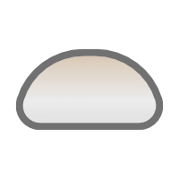

sphinx-mochi-theme
Index
Setup
Customize
Theme Requirements
Sample Pages
page 1
page 1-1
page 1-2
page 1-2-1
page 1-2-2
page 1-2-2-1
page 1-2-2-2
page 2
Kitchen Sink
Admonitions
API documentation
Blocks
Generic items
Images & Figures
Lists
Really Long Page Title because we should test sidebar wrapping
Structural Elements
Structural Elements 2
Tables
Typography
Placeholder Page One
Placeholder Page Two
This is just a page with a really long title for checking how the theme handles these situations
Long Page
日本語の文章
External Link
Additional "hidden" Pages
Placeholder Page Three
Placeholder Page Four
Sphinx Theme Gallery
sphinx-mochi-theme
page 1-1
#
this is page 1-1
Previous
page 1
Next
page 1-2
Menu
Expand
Search